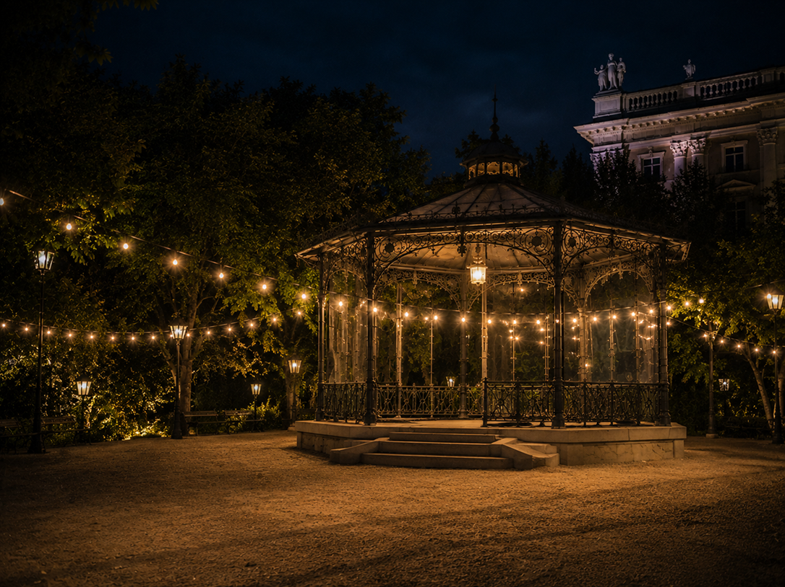
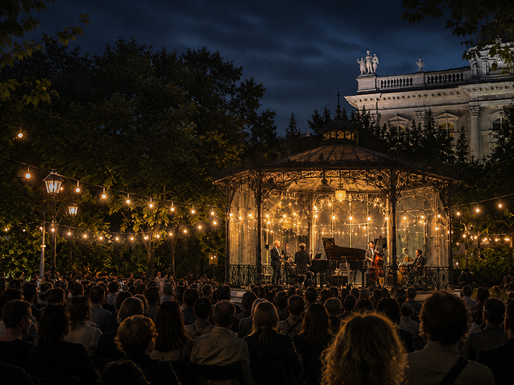
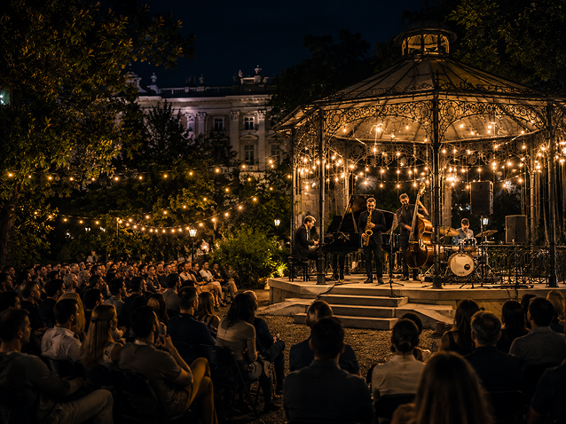
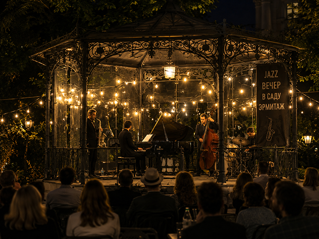
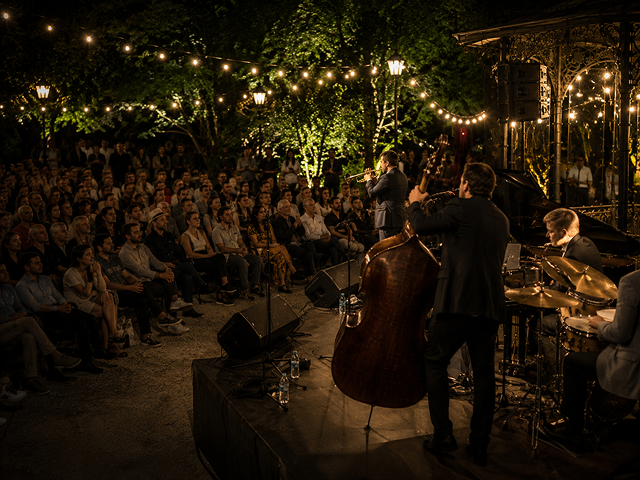
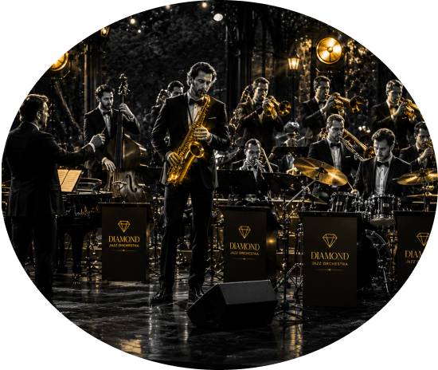
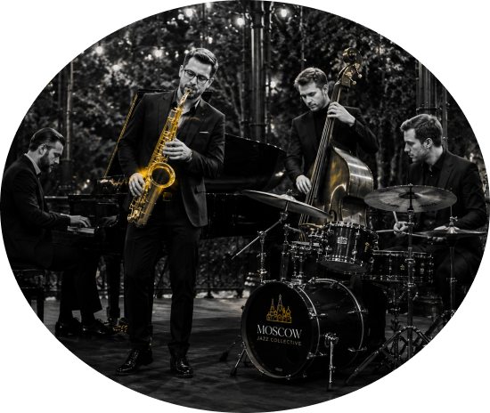
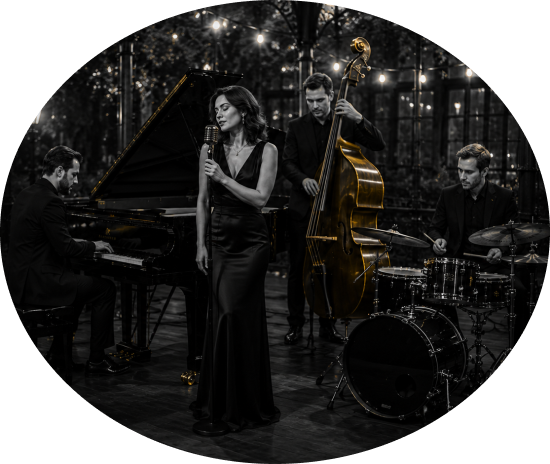
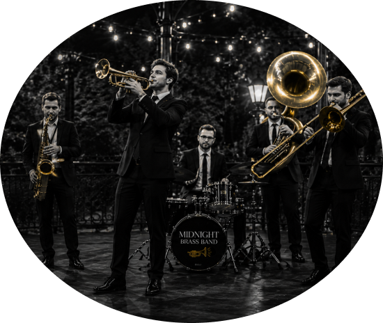

Подробнее о мероприятии

Джазовый вечер в Саду «Эрмитаж» — это особенное событие под открытым небом, где музыка, природа и летний вечер создают неповторимую атмосферу.
Среди старинных аллей и мягкого света фонарей гостей ждет живое исполнение лучших джазовых композиций — от классических стандартов до современных импровизаций.
На сцене выступят талантливые музыканты, чьи мелодии наполнят пространство теплом, романтикой и свободой джаза. Это идеальная возможность провести вечер в кругу друзей, близких или насладиться музыкой в одиночестве, погрузившись в настроение.
Уютная атмосфера исторического сада, качественный звук и живое исполнение создадут незабываемые впечатления для всех ценителей хорошей музыки. Позвольте себе на несколько часов отвлечься от городской суеты и окунуться в мир джаза под открытым небом.




В программе вечера



